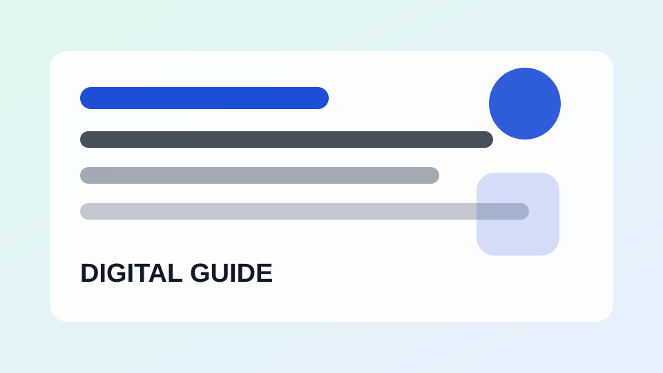

최신 디지털 생활 가이드
스마트폰과 앱을 더 편하게 쓰기 위한 실용 정보를 정리했습니다.
 스마트폰 사용법
스마트폰 사용법
휴대폰 배터리가 빨리 닳을 때 확인할 설정
배터리 사용량과 화면 밝기, 백그라운드 실행 앱을 점검합니다.
스마트폰 사용법
스마트폰이 느려졌을 때 기본 점검 순서
재부팅, 저장공간, 앱 업데이트처럼 먼저 확인할 항목을 정리했습니다.
스마트폰 사용법
와이파이가 자주 끊길 때 확인할 것
공유기, 거리, 주파수 대역, 기기 설정을 순서대로 살펴봅니다.
스마트폰 사용법
새 휴대폰을 샀을 때 처음 설정할 항목
기기 변경 직후 보안, 백업, 알림, 결제 설정을 점검합니다.
스마트폰 사용법
휴대폰 알림이 너무 많을 때 줄이는 방법
필요한 알림과 불필요한 알림을 구분해 집중도를 높입니다.
스마트폰 사용법
스마트폰 사용 시간을 줄이고 싶을 때 볼 설정
사용 시간 통계와 앱 제한 기능을 활용하는 방법입니다.
스마트폰 사용법
모바일 데이터 사용량을 줄이는 기본 방법
자동 재생, 백그라운드 데이터, 업데이트 설정을 확인합니다.
 앱 설정
앱 설정
카카오톡 저장공간 줄이는 방법
대화방 미디어와 캐시 파일을 정리해 휴대폰 공간을 확보합니다.
앱 설정
유튜브 시청기록 삭제와 일시중지 방법
추천 영상이 부담스러울 때 기록 관리 기능을 확인합니다.
앱 설정
네이버 앱 알림을 필요한 것만 남기는 방법
뉴스, 쇼핑, 메일, 인증 알림을 구분해 정리합니다.
앱 설정
크롬 다운로드 파일 정리하는 방법
모바일과 PC에서 쌓인 다운로드 파일을 확인하는 기준입니다.
앱 설정
지도 앱 위치 권한 설정할 때 확인할 것
항상 허용과 앱 사용 중 허용의 차이를 설명합니다.